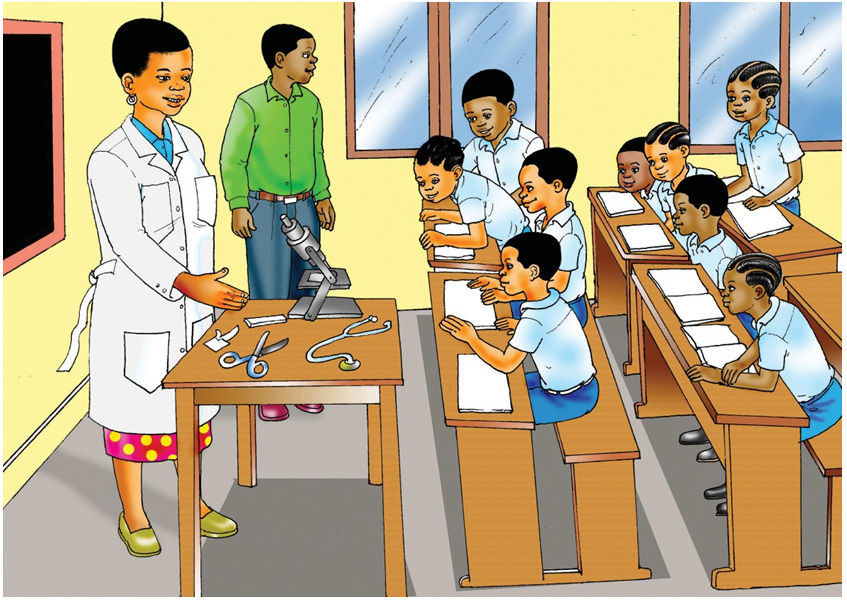

Tabibu aliwaeleza kuwa kila mtu anapaswa kwenda zahanati, kituo cha afya au hospitali kila anapohisi dalili za ugonjwa. Si vizuri kutumia dawa kabla ya kupata vipimo. Tabibu ndiye atakayekushauri dawa ya kutumia baada ya kujua ugonjwa wako. Tabibu aliendelea kwa kuwatajia wanafunzi vifaa mbalimbali vinavyotumika zahanati. Alitaja kifaa kimojawapo kuwa ni kipimajoto, ambacho hutumika kupima joto la mwili.
Alitaja kifaa kingine kuwa ni hadubini. Alieleza kuwa hadubini ni kifaa cha kukuza vitu vidogo visivyoonekana kwa macho. Vilevile, tabibu alisema kuwa kuna stetheskopu ambayo hutumika kusikilizia mapigo ya moyo. Aliendelea kusema kuwa vifaa vingine ni wembe, mkasi, bendeji na sindano.
Kila alipotaja kifaa husika, aliwaonesha wanafunzi. Tabibu alieleza kuwa kuna vifaa vingine kama beseni na ndoo ambavyo hakuweza kuja navyo darasani.
Baada ya kutaja vifaa vinavyotumika zahanati, tabibu alitaja huduma zinazotolewa zahanati. Huduma hizo ni kumpima